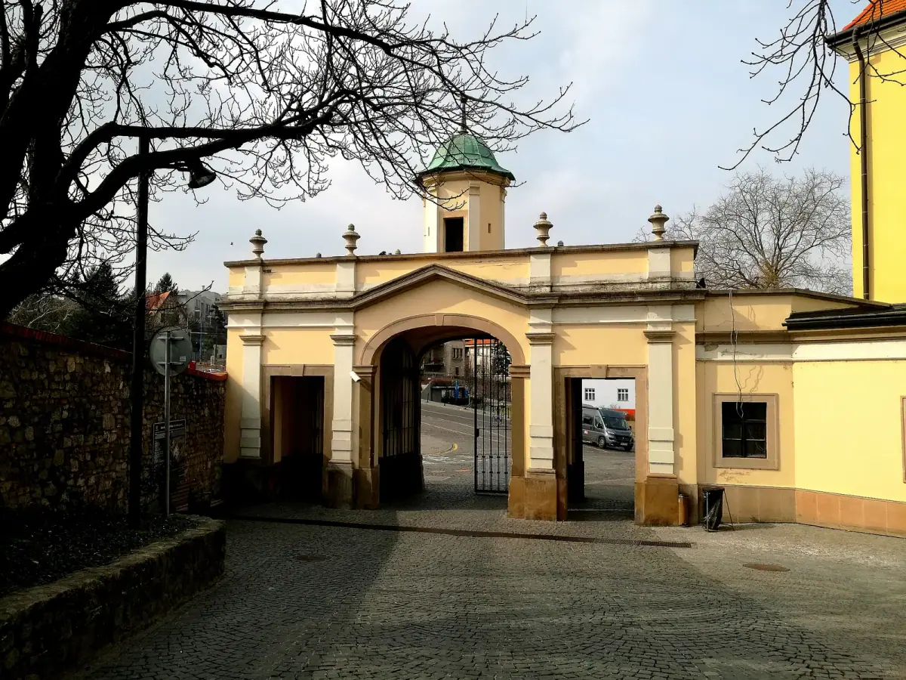
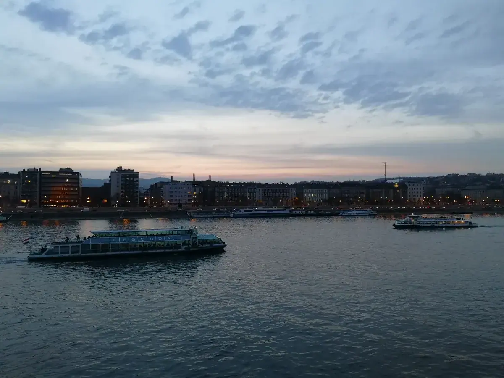
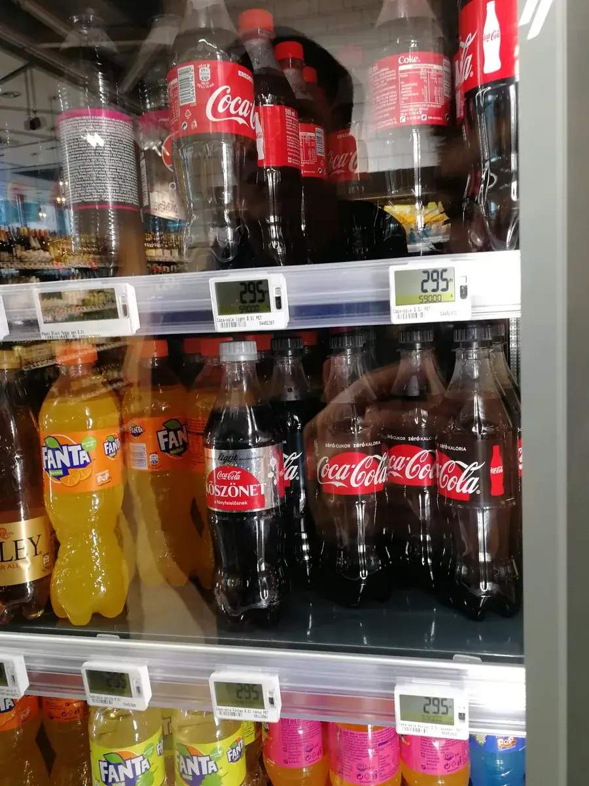
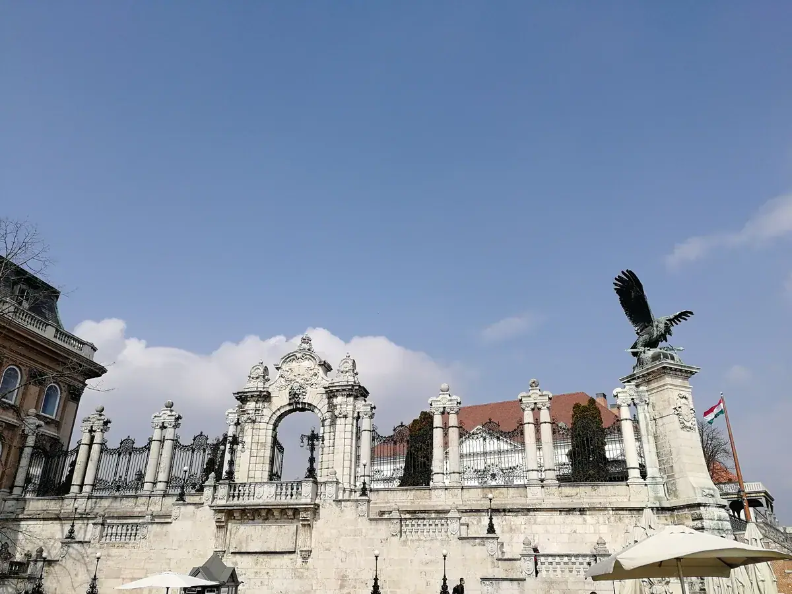
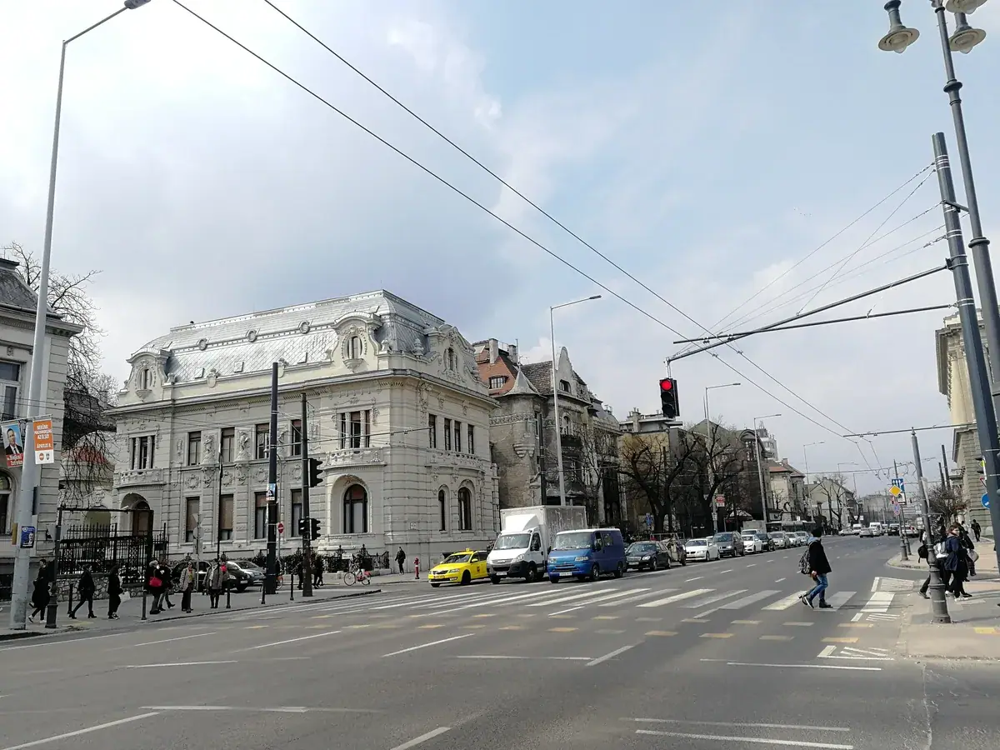

布达佩斯·河与夜——从国会大厦到"新能源匈牙利"
Budapest — river and night, from the Parliament to 'new-energy Hungary'.

（2017 年 · 匈牙利 · 布达佩斯）
一条河，分出两座城，又把两座城缝在了一起
布达佩斯这个名字本身就是一份「合并协议」——1873 年，布达、老布达、佩斯三座城市正式合并成一个市。多瑙河把这座城市天然地一分为二：西岸是布达，地势起伏，城堡山耸立在河边的高地上，是历史上匈牙利王权的所在地；东岸是佩斯，地势平坦，是近代以来的商业、金融和行政中心。国会大厦就坐落在佩斯这一侧的多瑙河畔——这个选址本身就带着政治意味：1867 年匈牙利在奥匈帝国内部争取到了和奥地利平起平坐的地位，原来议会一直借用布拉迪斯拉发和布达王宫里的场地办公，已经配不上这个新地位，于是匈牙利人特意选在王宫的对岸、河的东侧，盖一座属于「民权」而非「王权」的建筑，某种意义上是在用建筑位置本身，向河对岸的旧王权喊话。
这座国会大厦从 1885 年动工，1896 年匈牙利建国一千周年时基本建成主体，直到 1904 年才全部完工，前后花了近 20 年，动用了 10 万名工人，4000 万块砖、50 万块贵重石材，还用掉了 40 公斤黄金做装饰。新哥特式的尖顶、96 米高的中央穹顶、268 米的建筑长度，是欧洲现存第二大的议会建筑，内部圆顶大厅里至今保存展示着匈牙利的镇国之宝——王冠、权杖、宝剑和圣球。
到了晚上，这座建筑才真正显出它的分量——灯光打亮整栋建筑，倒映在多瑙河水面上，你必须站到对岸布达城堡山的观景台，才能看全它的全貌。多瑙河、赛切尼链桥、渔人堡和这座国会大厦，共同构成了 1987 年被列入世界文化遗产的「布达佩斯多瑙河沿岸景观」，夜景之所以出名，某种意义上是这条河、两座城市性格、和一整套精心选址的建筑群共同作用的结果——白天看是政治建筑，晚上看是这座城市最大方的一张名片。


从建材考察到新能源集群：2025 年再回匈牙利，看到的是完全不同的产业逻辑


2017 年这次更多是从历史和城市景观的角度看布达佩斯，但 2025 年再去匈牙利，是带着完全不同的目的——考察当地的家居建材行业，视角一下子从「这座城市过去是什么样」切换到了「这个国家现在的产业在往哪走」。
这个切换点恰逢其时，因为 2020 年之后的匈牙利，正在经历一场规模空前的新能源汽车产业集聚。这个国家已经聚集了宝马、奔驰、奥迪的整车项目，比亚迪也在南部城市赛格德投资约 5 亿欧元建设自己在欧洲的首个新能源乘用车生产基地，规划年产能 30 万辆，原计划 2026 年第四季度量产；动力电池这一端更密集——宁德时代在东部城市德布勒森投资超过 73 亿欧元建设欧洲最大的电池工厂之一，规划产能约 100GWh，韩国的三星 SDI、SK On，以及国内的亿纬锂能、欣旺达等企业也陆续在这里落子，一条从正负极材料、电解液、隔膜到电芯的完整产业链，几年之内在匈牙利这样一个人口不到千万的国家里扎下了根。
但这条路眼下也不算顺畅：2026 年 4 月，执政 16 年的欧尔班政府在大选中意外落败，新上台的蒂萨党在竞选时就把「整治外资电池工厂」列为核心纲领之一，原因是德布勒森当地居民长期担忧电池厂的健康和水资源风险；新政府上台后很快兑现承诺——设立专门的锂电监管机构，对现有电池项目重新做全面环评。与此同时，宁德时代德布勒森工厂因为违规排放废液被当地政府起诉，比亚迪在匈牙利的建厂项目也陷入了劳工权益方面的争议。这些是 2017 年我站在国会大厦对岸看夜景时完全想不到的——那时候的匈牙利，在我眼里还只是一个历史底蕴深厚的中欧小国，谁能想到不到十年后，它会变成中国新能源产业链在欧洲最密集的落脚点之一，而且很快就要直面当地政治和社会的真实反弹。
产能可以很快建起来，但一个地方对你的信任，需要比产能长得多的时间才能挣到。
——董立鑫 海鑫汇创始人兼执行总裁，新加坡世贸秘书长兼首席运营官
本文整理自董立鑫（Bruce Dong）海外产业考察记录，首发于海鑫汇。